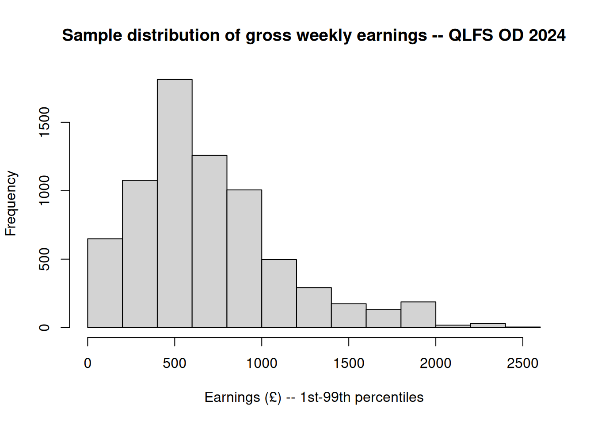
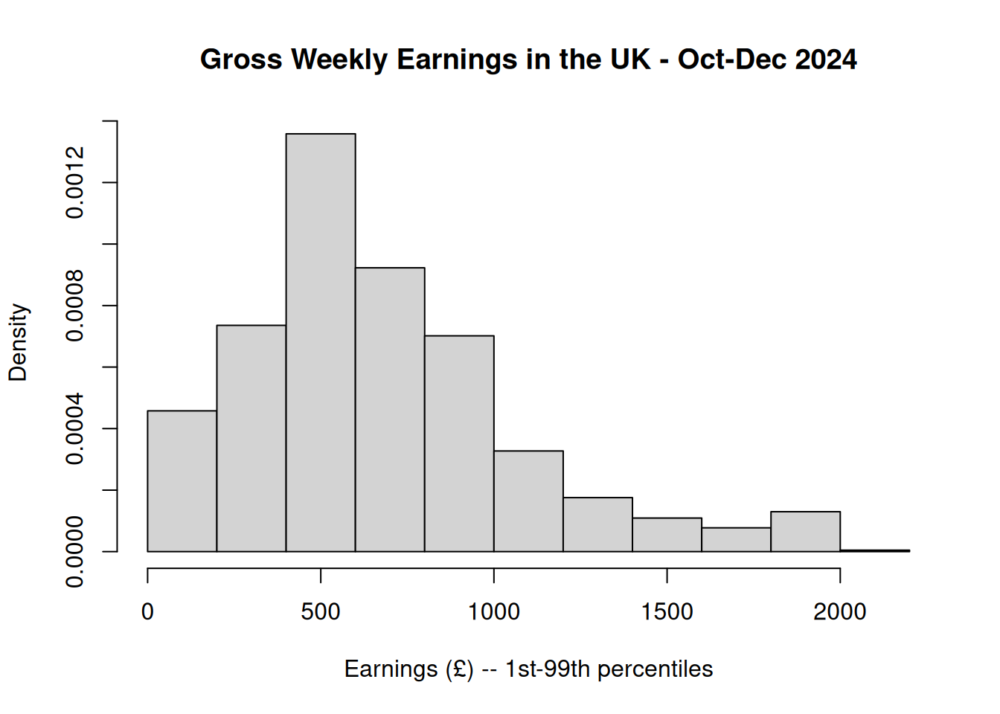
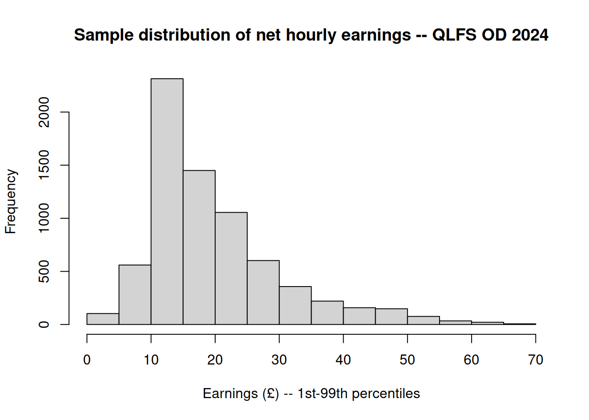
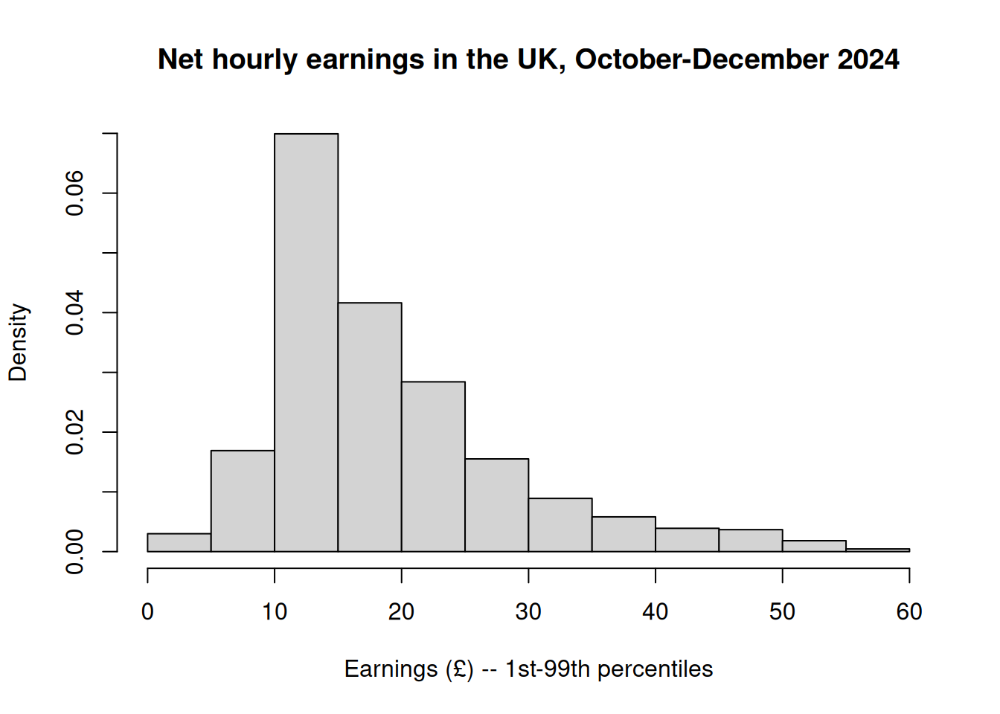

Weekly earnings of employees
In this exercise, you will recreate a labour market analysis by the ONS, reported in the table EARN04: Gross weekly earnings of full-time employees [last accessed 21/02/2025]. Currently, this table is updated four times a year in February, May, August and November using data from the Quarterly Labour Force Survey.
Learning outcomes:
- To understand better how ONS earnings statistics are produced
- To become more familiar with key variables from the QLFS
- To learn using income weights appropriately
Data
The data used in this exercise relates to an estimate published by the ONS for October-December 2024.
To follow the exercise, you need to access the relevant dataset from the UK Data Service: Quarterly Labour Force Survey, October - December, 2024.
Get set up
We suggest that you create a folder named LFS_exercises as the working directory for this exercise – where syntax files and other materials will be stored. After downloading the data, save it in an easily accessible location within LFS_exercises, such as a subfolder named Data.
We can now begin analysing the data using R. First let’s load the packages that are are going to need:
Let’s open the dataset.
As there are many variables in the LFS, let’s create a data frame with just those required for this exercise. We also convert the original variables into factors in order to make them easier to manipulate.
Let’s examine the dataset
We can again use head() or View() in order to inspect the data and the new variables:
# A tibble: 6 × 9
PERSNO PIWT24 PWT24 GRSSWK INECAC05 ILODEFR FTPT HOURPAY SEX
<dbl+lbl> <dbl+lbl> <dbl+lbl> <dbl> <fct> <fct> <fct> <dbl> <fct>
1 1 0 706 -9 [31] Inactiv… [3] In… [-9]… -9 [2] …
2 2 0 887 -9 [2] Self-emp… [1] In… [1] … -9 [1] …
3 1 0 598 -9 [31] Inactiv… [3] In… [-9]… -9 [2] …
4 1 0 879 -9 [31] Inactiv… [3] In… [-9]… -9 [2] …
5 2 0 0 -9 [31] Inactiv… [3] In… [-9]… -9 [1] …
6 1 0 793 -9 [1] Employee [1] In… [2] … -9 [2] …Examine weekly earnings
Let’s examine the descriptive statistics for weekly earnings.
Min. 1st Qu. Median Mean 3rd Qu. Max.
-9.0 -9.0 -9.0 75.8 -9.0 23076.0 | Name | dataex2$GRSSWK |
| Number of rows | 63069 |
| Number of columns | 1 |
| _______________________ | |
| Column type frequency: | |
| numeric | 1 |
| ________________________ | |
| Group variables | None |
Variable type: numeric
| skim_variable | n_missing | complete_rate | mean | sd | p0 | p25 | p50 | p75 | p100 | hist |
|---|---|---|---|---|---|---|---|---|---|---|
| data | 0 | 1 | 75.8 | 316.42 | -9 | -9 | -9 | -9 | 23076 | ▇▁▁▁▁ |
Non responses are coded using negative values, which affects analysis results. Let’s do it again, this time with respondents who provided a valid answer only:
We get a first sense that the sample mean and median gross weekly earnings revolve around respectively £732 and £615 . Given that the mean is likely to be influenced by very large earnings, we will use the median for the rest of this exercise.
Let’s now visualise the distribution of weekly earnings in the sample using a histogram. Earnings data tend to be skewed to the right (a small number of respondents have very large earnings) which reduces the visibility of lower earnings. We will therefore be leaving out the 1% highest earners for this exercise.
99%
2499.28 
Inferring median earnings for the UK population
### First, we need to declare the survey design
### In this case, we only have the weights
### For earnings-related estimation we need to use PIWT24
### For other estimates - PWT24
dataex2.s<- dataex2|>
as_survey_design(weights=PIWT24)
### Inference to the UK population
qtl.g<-svyquantile(~GRSSWK,
dataex2.s,
.99,
ci=T)
qtl.g $GRSSWK
quantile ci.2.5 ci.97.5 se
0.99 2115 1938 2308 94.37292
attr(,"hasci")
[1] TRUE
attr(,"class")
[1] "newsvyquantile"[1] 2115We now know that on average 99% of earners in the UK earn less than £2,115 per week. Let’s compare the weighted and unweighted distribution

Plot the distribution of hourly earnings up to the 99th percentile in the UK between October and December 2024.
99%
68.825 $HOURPAY
quantile ci.2.5 ci.97.5 se
0.99 57.09 54.94 60.43 1.40029
attr(,"hasci")
[1] TRUE
attr(,"class")
[1] "newsvyquantile"[1] 57.09

ONS estimates for employees’ gross weekly earnings
The code below recreates the ONS results showing the distribution of income for full-time employees overall and by gender. It does it in two stages:
- First, we create a variable to flag the ONS’ definition of full-time employees. It may be a good idea to double check the definition used by the ONS in its publication.. Looking at the notes under the Table EARN04, we learn that ONS figures are only computed for respondents’ main job, and also that those earnings more than £100 per hour are excluded.
We need to remain mindful of definitions:
- Employees refers to people who whose jobs implies working under an employment contract for an employer;
- Employed refers both to people who are employees and self employed ie who have a paid job.
- Full-time or part-time refer to people’s self declared working-time status, irrespective of whether they are employed or self-employed. It is usually considered in the UK that part-time hours correspond to less than 30 hours per week.
LFS data provides the INECAC05 variable, which records all nuances of economic activity (there are 35 of them!), including employment and self-employment. We will now examine compute the flagging variable and examine its distribution in the sample.
Anything else Full-time employee
43407 19662 - We then create a version of the data that takes the income weights into account and compute the results:
# A tibble: 2 × 4
ftEmp test_q50 test_q50_low test_q50_upp
<fct> <dbl> <dbl> <dbl>
1 Anything else 254 250 269
2 Full-time employee 692 692 712The median weekly earnings of full-time employees in the UK in October-December 2024 ranged between £692 and £712. We need to keep in mind that by using the income weights, those with missing values on GRSSWK are automatically left out.
What are the median weekly earnings for men and women in the UK?
What are median hourly earnings in the highest decile for males and females in the UK? How does it compare with the lowest decile?
Why are we using a different weight from exercise 1?
# A tibble: 4 × 5
# Groups: ftEmp [2]
ftEmp SEX Medwk_q50 Medwk_q50_low Medwk_q50_upp
<fct> <fct> <dbl> <dbl> <dbl>
1 Anything else [1] Male 231 210 262
2 Anything else [2] Female 262 250 272
3 Full-time employee [1] Male 731 712 760
4 Full-time employee [2] Female 650 625 673Median weekly earnings for men and women in the UK ranged respectively between £712 - £760 and £625 - £673
# A tibble: 4 × 5
# Groups: ftEmp [2]
ftEmp SEX NHrPay_q10 NHrPay_q10_low NHrPay_q10_upp
<fct> <fct> <dbl> <dbl> <dbl>
1 Anything else [1] Male 7.14 6.25 8.09
2 Anything else [2] Female 8.09 7.52 8.52
3 Full-time employee [1] Male 10.9 10.7 11.2
4 Full-time employee [2] Female 10.9 10.7 11.2 The net hourly rate of pay for men and women in the highest decile in the UK ranged respectively between £37.9 - £40.5 and £30.2 - £32.4. In the lowest decide, hourly rates of pay were identical.
- Because earnings are computed for a specific subpopulation: those in employment with valid earnings data.
What next?
See if you can examine earnings for temporary workers or another group of interest. Examine the full dataset and explore as you choose.
Move to the next exercise, which uses one of the LFS longitudinal datasets.